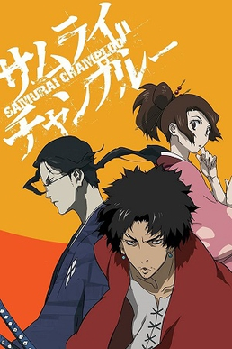
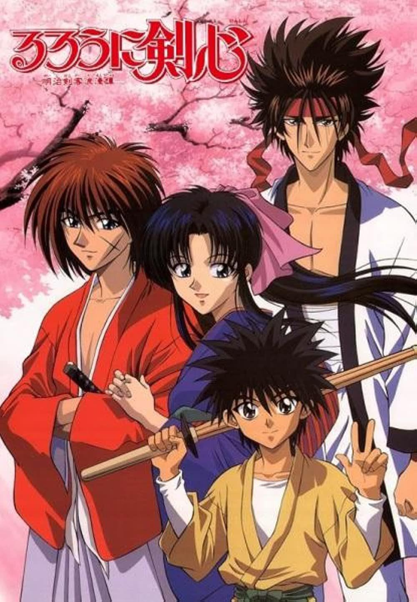

"Dragon Ball Z," a seminal Japanese anime, continues the legendary saga
of Goku and his allies defending Earth. In the Saiyan Saga, Goku's
long-lost brother Raditz emerges, setting the stage for intense battles
and Goku's sacrificial moment. The Frieza Saga intensifies as Goku
confronts the tyrant Frieza on Planet Namek, climaxing in Goku's iconic
transformation into the Super Saiyan. Transitioning to the Cell Saga,
the narrative focuses on androids and the bio-engineered perfect being,
Cell, with Gohan's ascension to Super Saiyan 2 as a standout moment. The
Majin Buu Saga introduces the chaotic Majin Buu, leading to monumental
battles and the fusion of Goku and Vegeta into Vegito. "Dragon Ball Z"
is lauded for its impactful storytelling, iconic transformations, and
enduring characters, leaving an indelible mark on the anime genre
globally.
Naruto
"Naruto" is a Japanese anime and manga series centered on Naruto
Uzumaki, a young ninja with dreams of becoming the strongest ninja and
leader of his village, known as Hokage. The series follows Naruto's
journey of growth, friendship, and self-discovery as he faces formidable
enemies, seeks recognition, and strives to protect his village. Filled
with ninja battles, complex characters, and themes of perseverance,
"Naruto" has become a cultural phenomenon, resonating with audiences
worldwide.
Baki the Grappler
"Baki the Grappler" is a Japanese anime and manga series following Baki
Hanma, a young martial artist seeking to hone his skills and surpass his
legendary father, Yujiro Hanma, known as the strongest creature on
Earth. The narrative unfolds through intense martial arts tournaments,
showcasing Baki's encounters with powerful opponents and his relentless
pursuit of strength. The series explores themes of martial arts
philosophy, rivalry, and the pursuit of excellence in combat, delivering
action-packed sequences and character-driven storytelling.
Kenichi: The Mightiest Disciple
"Kenichi: The Mightiest Disciple" is a Japanese anime and manga series
that revolves around Kenichi Shirahama, a high school student who, tired
of being bullied, decides to learn martial arts. He stumbles upon a dojo
and begins training under various masters in different martial arts
disciplines. The series follows Kenichi's journey as he faces
challenges, confronts powerful opponents, and strives to become the
mightiest disciple. It combines elements of action, comedy, and
coming-of-age themes, showcasing Kenichi's growth as a martial artist
and his interactions with a diverse cast of characters.
Hajime no Ippo
"Hajime no Ippo" is a Japanese anime and manga series written and
illustrated by George Morikawa. The story revolves around Ippo
Makunouchi, a timid and bullied high school student who discovers the
sport of boxing after being saved from a group of bullies by a
professional boxer. Inspired by his newfound interest in boxing, Ippo
decides to pursue the sport. Under the guidance of his coach, Genji
Kamogawa, and with the support of his friends and fellow boxers, Ippo
begins his journey to become a professional boxer. The series explores
Ippo's growth as a fighter, his relationships with other boxers, and the
challenges he faces in the competitive world of boxing. "Hajime no Ippo"
is celebrated for its intense and realistic portrayal of boxing,
character development, and the camaraderie among boxers. The series
combines sports action with elements of drama, humor, and personal
growth, creating a compelling narrative that has garnered a dedicated
fanbase over the years.
Kengan Ashura
"Kengan Ashura" is a Japanese manga and anime series that delves into
the intense world of underground gladiator-style martial arts
tournaments. The story revolves around Tokita Ohma, a skilled martial
artist representing a powerful business conglomerate. The series
explores various fighting styles, strategies, and the intricate
connections between powerful corporations and their champions. As Ohma
competes in the Kengan Annihilation Tournament, he faces formidable
opponents, each with their unique martial arts skills. "Kengan Ashura"
combines intense martial arts action with elements of corporate
intrigue, creating a compelling and adrenaline-pumping narrative.
Samurai Champloo

"Samurai Champloo" is a Japanese anime series that seamlessly blends
samurai action, hip-hop culture, and anachronistic elements. The story
follows three unlikely companions: Mugen, a brash vagabond with a unique
fighting style; Jin, a calm and skilled ronin with a traditional
approach; and Fuu, a spirited young woman on a quest to find the
"samurai who smells of sunflowers." The trio embarks on a journey
through an anachronistic Edo-era Japan, encountering various challenges,
sword fights, and engaging in an eclectic mix of adventures. The series
is known for its dynamic animation, stylish soundtrack featuring hip-hop
beats, and its unconventional approach to historical settings. "Samurai
Champloo" is celebrated for its unique fusion of genres, memorable
characters, and the exploration of friendship and destiny against the
backdrop of a vibrant and anachronistic world.
Afro Samurai
"Afro Samurai" is a Japanese anime and manga series that follows the
journey of Afro, a skilled and stoic swordsman, as he seeks vengeance
against Justice, the man who killed Afro's father. The series unfolds in
a futuristic, yet feudal, Japan and combines intense sword fights, a
hip-hop-inspired soundtrack, and a revenge-driven narrative. Afro's
quest for justice is marked by blood-soaked battles, challenging
adversaries, and a personal journey to reclaim the No. 1 headband,
symbolizing the most formidable warrior. "Afro Samurai" is praised for
its stylish animation, action sequences, and the fusion of traditional
samurai themes with modern influences.
Rurouni Kenshin

"Rurouni Kenshin" is a Japanese anime and manga series set in the Meiji
era. The story revolves around Himura Kenshin, a wandering swordsman
with a dark past as an assassin during the Bakumatsu war. Vowing never
to kill again, Kenshin carries a reverse-edged sword and seeks
redemption by protecting the innocent. As Kenshin settles in Tokyo, he
encounters friends, allies, and adversaries from his past. The series
explores themes of atonement, pacifism, and the impact of one's actions
on the path to redemption. Kenshin's journey is marked by intense sword
fights, moral dilemmas, and the enduring pursuit of a peaceful
existence. Renowned for its captivating storytelling, well-developed
characters, and historical setting, "Rurouni Kenshin" remains a classic
in the anime and manga landscape.
Karate Shoukoushi Kohinata Minoru
"Karate Shoukoushi Kohinata Minoru" (Kohinata Minoru the Karate Girl) is
a Japanese manga series that has been adapted into anime. The story
centers around Minoru Kohinata, a college student with no particular
goals in life. However, his life takes a turn when he encounters a
karate club and becomes enamored with the martial art. Driven by
newfound passion, Minoru joins the karate club, and the series follows
his journey as he learns and trains in karate. Along the way, Minoru
faces challenges, forms friendships, and experiences personal growth.
The narrative combines elements of sports, martial arts, and
coming-of-age themes, showcasing the protagonist's dedication to
mastering karate and finding purpose in his college years. "Karate
Shoukoushi Kohinata Minoru" explores the discipline, perseverance, and
camaraderie inherent in martial arts, using karate as a backdrop for the
protagonist's development.